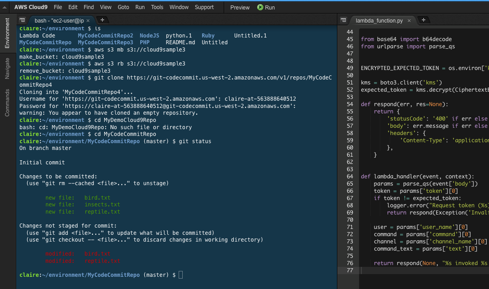

Beschreibung
AWS Cloud9 ist eine innovative integrierte Entwicklungsumgebung (IDE), die von Amazon Web Services (AWS)
bereitgestellt wird. Diese Plattform ermöglicht es Entwicklern, ihre Programme von praktisch überall aus zu
entwerfen, zu entwickeln und auszuführen, solange eine Internetverbindung besteht - und das ganz ohne die
Notwendigkeit, Software lokal zu installieren.
Mit Cloud9 erhalten Entwickler einen webbasierten Zugriff auf eine vollständige Entwicklungsumgebung, die alle
Funktionen einer herkömmlichen IDE bietet. Dazu gehören ein leistungsstarker Code-Editor, Tools zum Teilen von Code,
Debugging-Funktionen und nahtlose Integrationen mit verschiedenen Speicherumgebungen wie Amazon EC2 und
Lambda.
Cloud9 bietet Entwicklern die Flexibilität, Anwendungen und Websites mit einer breiten Palette von Funktionen zu
entwickeln. Kurz gesagt ermöglicht Cloud9 Entwicklern, ohne aufwändige lokale Konfigurationen von jedem Computer
mit Internetverbindung aus sofort mit der Entwicklung und dem Testen ihrer Anwendungen zu beginnen.
Eine besonders vorteilhafte Funktion von Cloud9 besteht darin, dass es nahtlos mit anderen AWS-Diensten wie
AWS CodeStar integriert werden kann. Dadurch können Entwickler serverlose Webanwendungen entwickeln, erstellen
und bereitstellen, ohne sich um komplexe Konfigurationen kümmern zu müssen. Diese Integration bietet eine effiziente und
nahtlose Entwicklungsumgebung für die Erstellung von Webanwendungen in der Cloud.
Insgesamt bietet AWS Cloud9 eine flexible und leistungsstarke Plattform für Entwickler, die eine moderne,
cloudbasierte Entwicklungsumgebung suchen. Mit seinen umfangreichen Funktionen und nahtlosen Integrationen ermöglicht
Cloud9 Entwicklern, produktiv zu sein und sich auf das Wesentliche zu konzentrieren: das Schreiben großartiger
Software.
- Eine webbasierte IDE von Amazon Web Services (AWS)
- Entwicklung von Programmen von überall mit Internetzugang möglich
- Keine lokale Softwareinstallation erforderlich
- Vollständige IDE-Funktionen, einschließlich Code-Editor, Debugging und Code-Sharing-Tools
- Integration mit AWS-Diensten wie EC2 und Lambda
- Flexibles Entwickeln von Anwendungen und Websites
- Nahtlose Integration mit AWS CodeStar für serverlose Anwendungen
- Ermöglicht die Entwicklung in der Cloud ohne komplexe Konfigurationen
- Fokus auf Produktivität und Entwicklung großartiger Software
Schlüsselwörter
Schlüsselworte bzw. Schlagworte sollen uns dabei helfen, einen Service leichter zu erkennen, wenn es um Prüfungsfragen geht. Ließ dir die Fragen richtig durch und achte auf folgende Schlüsselworte. Sie können dir bei der Beantwortung der Fragen helfen.
- Cloud-basierte integrierte Entwicklungsumgebung (IDE)
- Codebearbeitung in der Cloud
- Unterstützung mehrerer Programmiersprachen (z.B. JavaScript, Python, Java)
- Kollaborative Entwicklung
- Integration mit AWS-Services
- Vorinstallierte Entwicklungstools und Laufzeitumgebungen
- Terminalzugriff
- Debugging und Testen in der Cloud
- Projektverwaltungsfunktionen
- Automatische Umgebungsbereitstellung
Grafische Erklärung
Prüfung Fragen
- Welche Funktionen bietet AWS Cloud9 für die Softwareentwicklung?
- Welche Programmiersprachen und Laufzeitumgebungen werden von AWS Cloud9 unterstützt?
- Wie können Entwickler AWS Cloud9 verwenden, um Serverless-Anwendungen zu erstellen und zu testen?